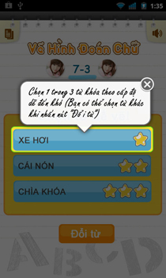
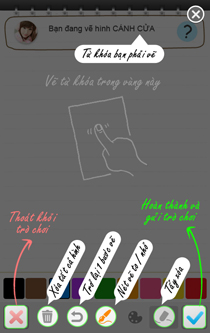
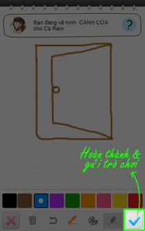
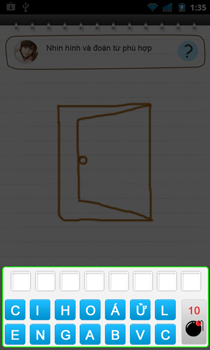
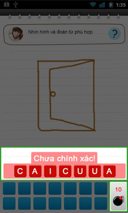
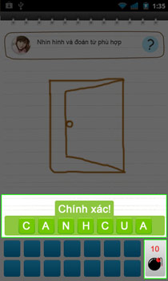

KHI BẠN TẠO MỚI 1 GAME
Bước 1:
Bạn hãy chọn từ khóa theo cấp độ từ dễ đến khó tương ứng với số điểm 1, 3, 5.

Bước 2:
Bạn hãy sử dụng các công cụ có sẵn để mô tả từ khóa đó bằng hình vẽ.

Bước 3:
Sau khi vẽ xong hãy chọn nút để gửi hình cho bạn bè đoán từ khóa.

KHI BẠN NHẬN ĐƯỢC 1 GAME
Bước 1:
Chọn các ký tự thành từ tương ứng với hình minh họa.

Bước 2:
Khi kết quả "Sai" các ô màu đỏ sẽ hiển thị. Bạn có thể bấm vào từng ô chữ sai để chọn lại và sắp xếp cho đúng.
Sử dụng để xóa bớt những ký tự không cần thiết.
Ghi chú:
- Mỗi lần sử dụng sẽ bị trừ đi một trái.
- Để có thêm bạn phải trả lời đúng đáp án 3 lần liên tiếp.
- Khi bắt đầu tham gia bạn sẽ có 3 . Trong quá trình chơi game số lượng tối đa bạn có thể đạt được là 10, lúc này dù bạn có thắng 3 trận liên tiếp cũng không được cộng thêm.

Bước 3:
Khi kết quả "Đúng" các ô màu xanh sẽ hiển thị. Bạn hãy chờ giây lát để xem thống kê điểm số.
